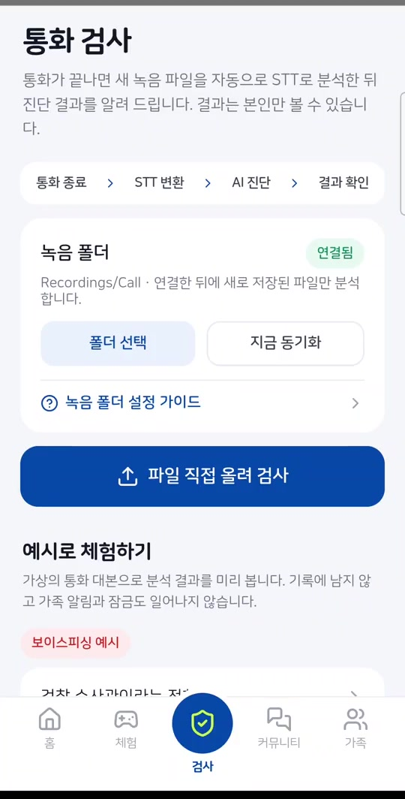
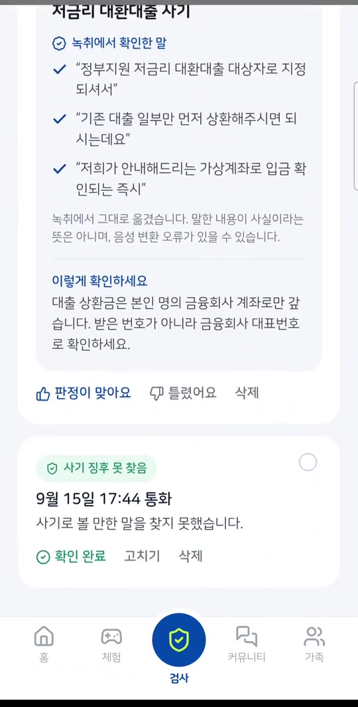
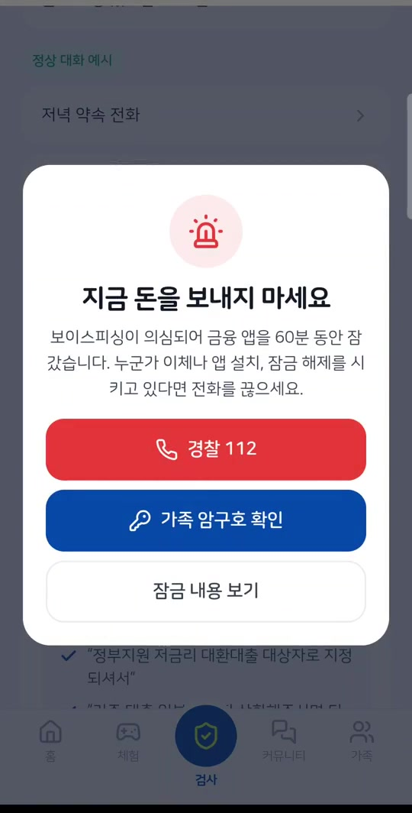
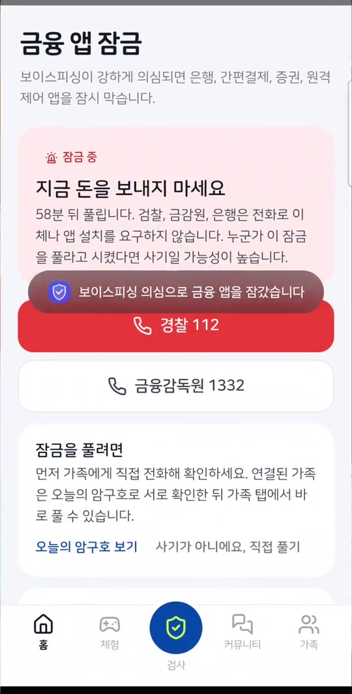

코디세이 AI 해커톤 2026 · 팀 유레카
통화 녹음을 AI로 분석해 근거를 보여 주고, 가족에게 알리고, 금융 앱을 잠그는 보이스피싱 후속 대응 서비스
김병국 · 김동현 · 김호연 · 유상우 · 전선형
발생 건수는 24.6% 줄었지만 피해액은 62.4% 늘었습니다. 피해액의 78.6%(9,884억 원)가 기관 사칭형입니다.
출처: 국회 제출 자료, 매일신문 2026-09-23
보호 대상
삼성 휴대폰으로 통화를 녹음하는, 보이스피싱에 노출된 사람
가족
부모님과 형제의 금융 피해를 걱정하지만 통화 내용까지 보고 싶지는 않은 사람
| 조건 | 동작 |
|---|---|
| 0.7 이상 | 연결된 가족에게 의심 여부만 알림 |
| 0.9 이상 | 은행·카드·간편결제·증권·원격제어 앱 47개 잠금 (기본 1시간) |
| 근거 없음 | "판단 어려움"으로 낮추고 알림·잠금 안 함 |
| 잠금 해제 | 가족은 즉시, 본인은 10분 대기 후, 또는 시간 만료 |
일반 안드로이드 앱은 통화 음성을 받을 수 없습니다. VOICE_CALL 캡처는 사전 설치된 특권 앱의 권한이 필요하고, 통화 중 일반 앱의 마이크 입력은 무음입니다.
실시간 탐지는 제조사와 통신사 영역입니다. 우리는 이체 전 차단을 보장하지 않으며, 통화 후 추가 이체와 2차 피해를 줄이는 데 집중합니다.




가족 암구호 매일 0시에 바뀌는 단어로 가족 사칭 확인
사기 체험 13개 수법을 대화형으로 연습
제보→훈련 추천 상위 제보를 AI 시나리오로 생성
코디·퀴즈 가족 퀴즈 15장, 예방 행동에만 점수
| 층 | 적용 방식 | 구분 |
|---|---|---|
| 음성 → 글자 | 자체 서버 CPU Whisper large-v3-turbo INT8, 부하·장애 시 OpenAI whisper-1 | 직접 구축: 5개 설정 비교, 서빙, 전환. 대체 경로만 외부 API |
| 사기 판정 | Claude claude-opus-5-5, JSON 스키마 출력. 4개 라벨, 유형, 확신도, 인용 근거 | 외부 API + 직접 작성: 판정 기준, 스키마, 프롬프트 방어 |
| 수법 참고(RAG) | 문서를 LLM으로 분류·구조화해 적재. BM25(nori) + bge-m3 kNN을 RRF로 결합, 유사 사례 3건을 판정에 참고. 실패 시 LLM만 사용 | 직접 구현: 적재·검색 API. Elasticsearch, bge-m3 사용 |
| 유형 매칭 | 음절 2-gram BM25 + 벡터 → RRF 결합 → LLM 재순위 (수법 지식 10종) | 직접 구현. 벡터는 현재 해시 임베딩 |
| 근거 대조 | LLM이 인용한 문장이 녹취에 순서대로 있는지 코드로 검사 | 직접 구현 |
| 후속 조치 | 임계값 분기, 가족 알림, 잠금·해제 정책, 가족 그룹 암구호 | 직접 구현 |
| 안드로이드 앱 | 저장소 접근 프레임워크 폴더 감시, S3 직접 업로드, 접근성 서비스 앱 차단 | 직접 구현 (Kotlin) |
| 제보 → 시나리오 | 번호·계좌·링크 마스킹 후 LLM으로 5턴 훈련 생성, 결과 구조 검사 | 직접 구현 + 외부 API |
# server/guard/llm.py (요약)
def _keep_grounded(result, transcript):
if result["label"] != VOICE_PHISHING:
result["evidence"] = []
return result
# 녹취에 실제로 있는 인용만 남김
result["evidence"] = [q for q in result["evidence"]
if _in_transcript(q, transcript)]
# 근거가 없으면 가족 알림과 잠금을 일으키지 않음
if not result["evidence"]:
result["label"] = "uncertain"
return result
자동 테스트 71개 통과 (pytest, 외부 키 없이 실행). 판정 분기, 잠금 해제, 가족 권한, 제보 마스킹을 포함합니다.
| 구분 | 사용 기술 |
|---|---|
| 서버 | Python 3, FastAPI, Uvicorn, SQLite |
| 웹 | HTML, CSS, JavaScript (프레임워크 없음) |
| 앱 | Kotlin, WebView, WorkManager, 접근성 서비스 (minSdk 26, targetSdk 34) |
| AI | Claude, faster-whisper(대체: OpenAI Whisper), Elasticsearch 8.17 + bge-m3 |
| 인프라 | AWS EC2 3대: 서비스 t4g.large, STT c7i-flex.large, 검색 t4g.medium. S3 (presigned URL), Terraform·Docker(검색 서버), GitHub Actions |
| 관측 | Langfuse Cloud: 시간·토큰·판정 라벨만 전송, 통화 내용은 보내지 않음 |
| 검증 | pytest 71개, 실제 음성 파일, 실제 폰 녹화 |
화면을 WebView로 공유
화면을 고쳐도 APK를 다시 빌드하지 않습니다. 네이티브는 폴더 접근, 동기화, 차단만 맡습니다.
기기에 AWS 키를 두지 않음
presigned URL로 사용자별 경로에 직접 올립니다.
음성은 자체 서버에서 먼저
외부 전송과 의존을 줄이려 STT를 직접 띄웠습니다. GPU 사용 제약으로 CPU에서 서빙하고, 부하·장애 때만 OpenAI로 넘깁니다.
| 이름 | 담당 | 기여 내용 |
|---|---|---|
| 김동현 | 서비스 구현 총괄 | 서버 API와 판정 파이프라인, 근거 대조, 가족 알림·잠금·암구호, 웹 화면, 안드로이드 앱, 체험·제보·피드백, S3·RAG·Langfuse 연동, 테스트, 배포 |
| 김호연 | 초기 기획, 시나리오, 데이터 | 문제 조사와 경쟁 서비스 비교, 기획 초안과 README 초안, 시뮬레이션 기반 체험 시나리오 13개 작성, 검색 문서 90건 주입, 저장소 비밀값 관리 규칙(.gitignore) |
| 유상우 | 브랜드 디자인 | CodySafe 브랜드 가이드, 로고 자산 |
| 김병국 | QA, 기능 기획, 경쟁사 분석 | QA, 기능 기획, 경쟁사 비교 분석. URL 탐지 기능을 개발했으나 통화 후 대응이라는 서비스 목적과 맞지 않아 폐기 |
| 전선형 | 데이터셋, 기능 기획, QA | 사기 사례 검색 데이터 90건 제작, 서비스 기능 기획, 품질 검증(QA) |
GitHub 브랜치와 Pull Request로 합치고, 초기 QR 판독 기획과 현재 통화 후 대응 기획을 모두 저장소 문서로 남겼습니다.
e352ae7). 체험 대화가 짧음 → 5턴으로 확장 (55c43ac)f161a70, 03524da)55c43ac)| 구분 | 명칭 | 용도 | 라이선스 |
|---|---|---|---|
| 오픈소스 | FastAPI 0.162, Uvicorn 0.54 | 서버 | MIT, BSD-3-Clause |
| 오픈소스 | boto3 1.43, httpx 0.28, pytest 9.2 | S3 연동, HTTP, 테스트 | Apache 2.0, BSD-3, MIT |
| 오픈소스 | anthropic 2.3, openai 3.42, langfuse 5.1 | API 클라이언트, 관측 | MIT, Apache 2.0, MIT |
| 오픈소스 | AndroidX WorkManager 2.9.1, DocumentFile 1.0.1 | 앱 주기 실행, 폴더 접근 | Apache 2.0 |
| 오픈소스 | Elasticsearch 8.17.0, analysis-nori | RAG 구현 (사기 사례 검색) | Elastic License 2.0 |
| 오픈소스 | BAAI/bge-m3, sentence-transformers, PyTorch, elasticsearch-py, pypdf | RAG 구현 (임베딩, 문서 적재) | MIT, Apache 2.0, BSD-3 |
| 오픈소스 | faster-whisper 1.2.1, CTranslate2 4.8.4, Whisper large-v3-turbo | 자체 STT 서버 (최종 선정) | MIT |
| 오픈소스 | Whisper large-v3, whisper-medium-komixv2 | STT 비교 평가 (미채택) | MIT, 모델 카드 표기 없음 |
| 오픈소스 | Qwen3-ASR 0.6B·1.7B, qwen-asr 0.0.6, Transformers 4.57 | STT 비교 평가 (미채택) | Apache 2.0 |
| 오픈소스 | SUIT 2.0.5, 나눔스퀘어 라운드, Lucide 0.460 | 폰트, 아이콘 | OFL, OFL, ISC |
| 외부 API | Anthropic claude-opus-5-5, claude-haiku-5-5 | 판정, 재순위, 시나리오 생성, 문서 구조화 | 상용 API |
| 외부 API | OpenAI whisper-1, gpt-image-2 | STT 대체 경로, 체험 가상 인물 사진 | 상용 API |
| 기타 | Amazon EC2 t4g.large, c7i-flex.large, t4g.medium 각 1대 | 서비스, STT, 검색 서버 | 상용 서비스 |
| 외부 API | Amazon S3, Langfuse Cloud | 음성 저장, 처리 시간·토큰 관측 | 상용 서비스 |
| 외부 API | Amazon Polly, ElevenLabs | STT 평가용 한국어 데이터셋, 자연스러운 음성 생성 | 상용 API |
| 사전 보유 코드 | 웹 화면 코드 index.html, css/, js/, assets/ (2026-10-30 01시경 작성, 주제 공개 전) | 공용 화면 자원과 초기 웹 MVP | 팀 자체 작성 |
| 기타 | Terraform, Docker | 검색 서버 구성 | BUSL 1.1, Apache 2.0 |
| 기타 | Claude Code, OpenAI Codex | 코드·문서 작성 보조 | 상용 서비스 |
| 기타 | 금융당국 보도자료, KISA 118 상담 기반 합성 데이터 | 검색 문서 (원문 미저장, 요약만 적재) | 각 출처 이용 조건 |
| 기타 | 금감원 공개 녹음 전사(KorCCVi) | 요약만 색인, 검색 결과에서 제외, 재배포 안 함 | 재배포 금지, 금감원 조건 |
| 기타 | 금융감독원·금융위원회 경보, 매일신문 보도 | 홈 화면 사기 동향 (출처 표시) | 출처 표시 인용 |
평가셋은 Claude Code로 작성한 합성 통화이며 결과 확인 전에 고정했습니다. 60건 기준 95% 신뢰구간은 탐지율 88% 이상, 오탐률 12% 이하입니다. 투자·로맨스 등 8건은 기타 사기로 판정해 설계상 알림·잠금이 없습니다. STT 비교도 비용·시간 제약으로 합성 음성을 썼고, 실제 통화 평가는 2단계에서 합니다.
| 항목 | 상태 |
|---|---|
| 녹음 → STT → 판정 → 경고 → 잠금 | 실제 폰에서 확인 |
| 가족 알림, 암구호, 제보, 피드백 | 테스트·브라우저 확인 |
| STT 5개 설정 비교 (합성 음성 20개) | turbo CER 3.33%, RTF 1.17 |
| 실제 MP3 → 자체 STT → 판정 → 잠금 | 실서버 확인 |
| 합성 사기 통화 30건 탐지 | 30건 (가족 알림 22, 잠금 18) |
| 헷갈리는 사례를 넣은 합성 정상 통화 30건 오탐 | 0건 (알림·잠금 0) |
| 사례 검색(RAG) 유무 비교 | 탐지·오탐 차이 없음 |
| 실제 통화 성능, 실제 피해 감소 효과 | 미측정 |
1단계 · 출시 후 3개월까지
2단계 · 6개월까지
3단계 · 12개월까지
탐지 다음에 무엇을 할 것인가. CodySafe는 그 답을 가족과 함께 만듭니다.